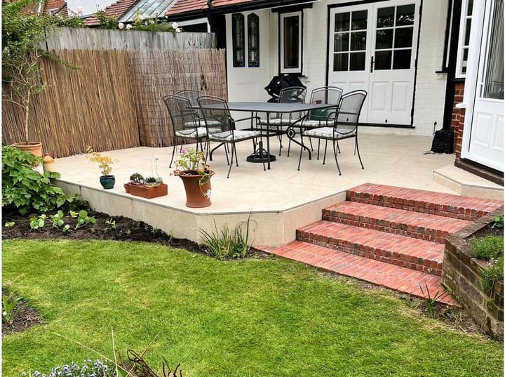
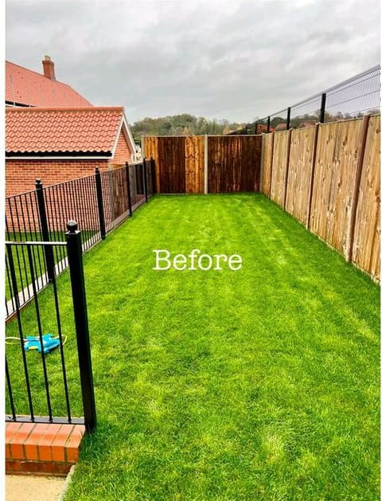
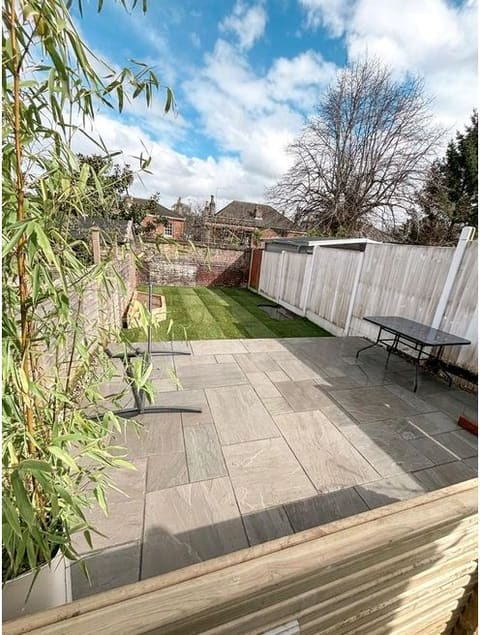
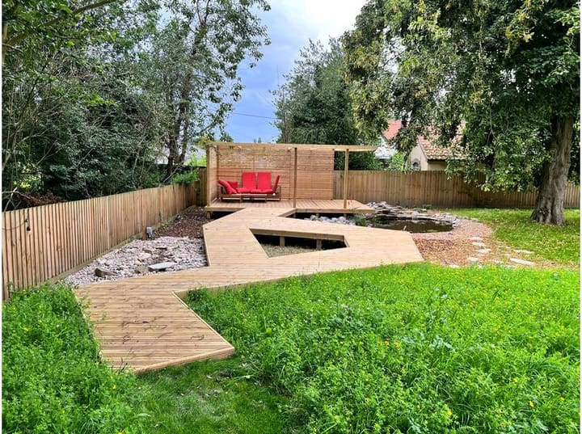
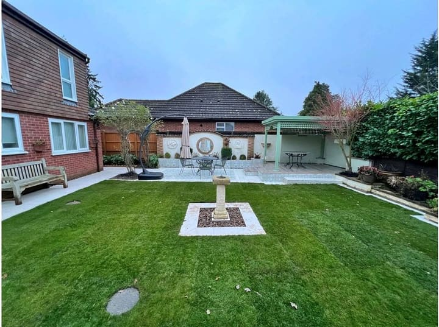
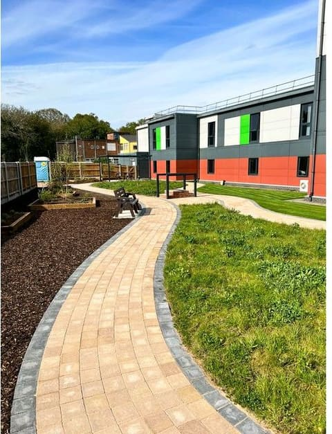
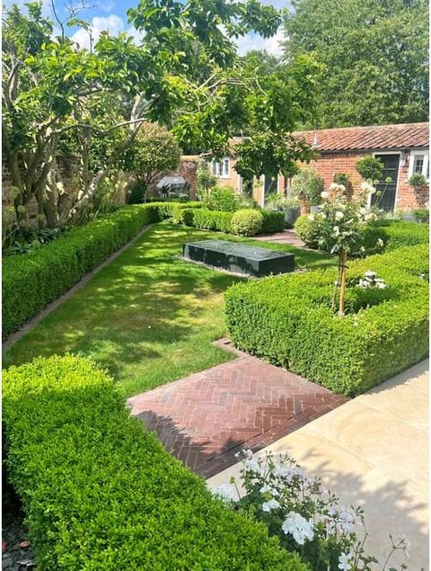
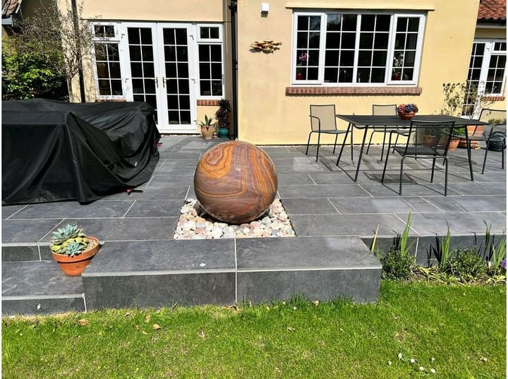
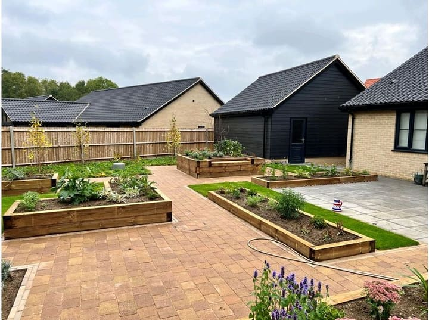
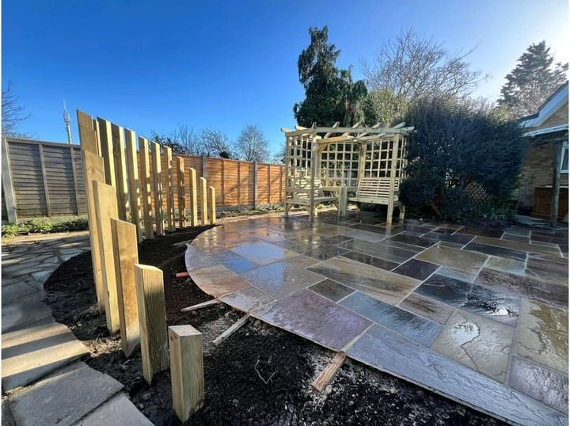

- Home
- Our work
Our work
Gardens we have built around Norwich
Every one designed in-house, built by our own team, and planted as carefully as it was paved. Have a look, then tell us which bits you like.

Cottage garden gin terrace
Wymondham, Norfolk
A wood-effect porcelain terrace in an old walled garden, wrapped in deep planting and set against an oak-framed garden room.

Low-maintenance modern garden
Norwich
Large-format grey porcelain, slate-faced raised beds and a horizontal cedar screen — a garden that still looks composed in February and asks very little of you.

Raised sandstone terrace
Norfolk
A raised buff sandstone terrace off the French doors, with brick-faced steps down to the lawn and reed screening for privacy.

Riven sandstone patio
Norfolk
Riven grey Indian sandstone in a random coursed pattern, with slate chippings, dark stained fencing and festoon lights running up to a garden shelter.

New-build garden, one year on
Norfolk
A bare new-build plot of turf and fence panels, and the same garden a year later — porcelain plank paving the full length, square timber arches, and borders that have filled in.

Town garden in riven sandstone
Norwich
A grey riven sandstone patio taking the near half of a long town garden, with the lawn kept beyond it and bamboo for screening.

Decked walkway and pond
Norfolk
An angular deck walkway crossing the garden to a raised seating deck under a slatted pergola, with a natural pond alongside it.

Courtyard garden with a louvred pergola
Norfolk
A small new-build plot turned into a courtyard: grey porcelain, dark metal planters, artificial lawn and a louvred pergola you can sit under whatever the weather.

Formal garden with loggia and sundial
Norfolk
A wide formal lawn with a sundial set on its own plinth, leading to a paved terrace, a rendered feature wall and a painted timber loggia to sit under.

School grounds and pathways
Norfolk
Curving block-paved paths, edged in charcoal, running through new planting and lawn around a school building.

Walled garden with a box parterre
Norfolk
Clipped box laid out in a parterre, standard trees, a brick herringbone path and a still water feature sunk into the lawn — inside an old walled garden, off a pale limestone terrace.

Limestone patio with a sphere water feature
Norfolk
A raised patio in dark limestone with a rainbow sandstone sphere set into a pebble bed, and a single generous step down to the lawn.

Kitchen garden with raised beds
Norfolk
Large timber raised beds set among buff block-paved paths and strips of lawn, planted for vegetables, herbs and cutting — shown newly planted and a season on.

Curved sandstone patio
Norwich
A curved patio in multi-coloured riven sandstone, with a screen of kiln-dried posts cut into a wave behind it and a corner arbour to sit in.